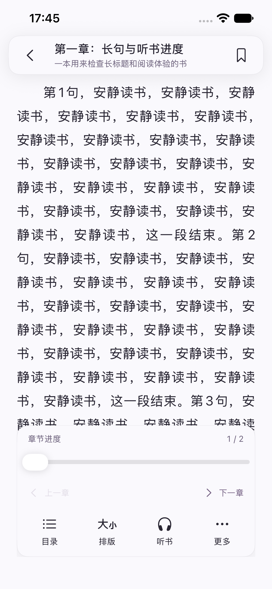
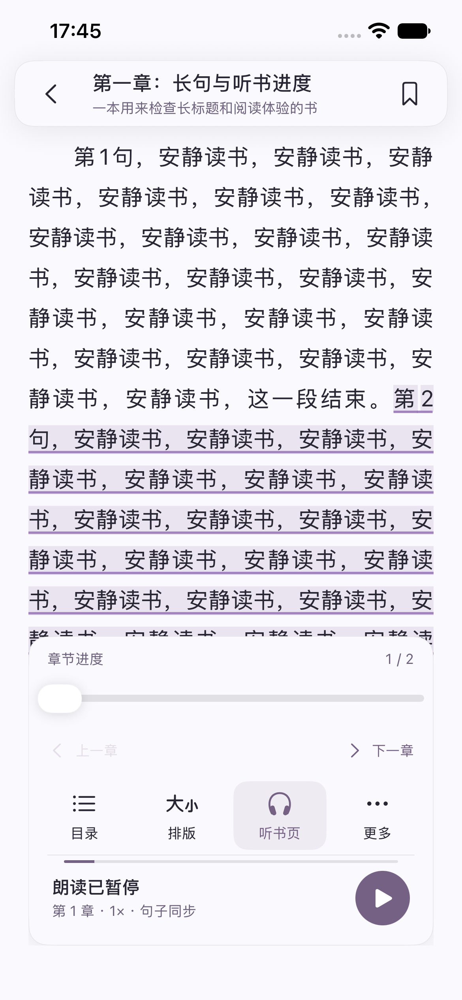
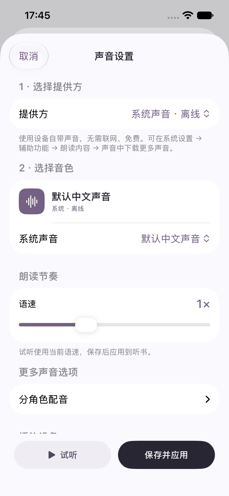
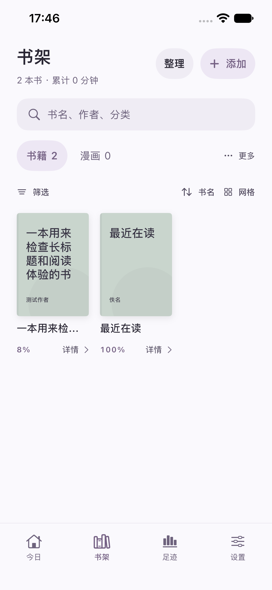
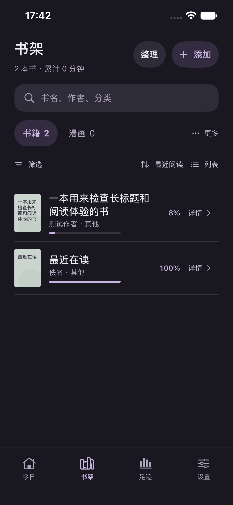
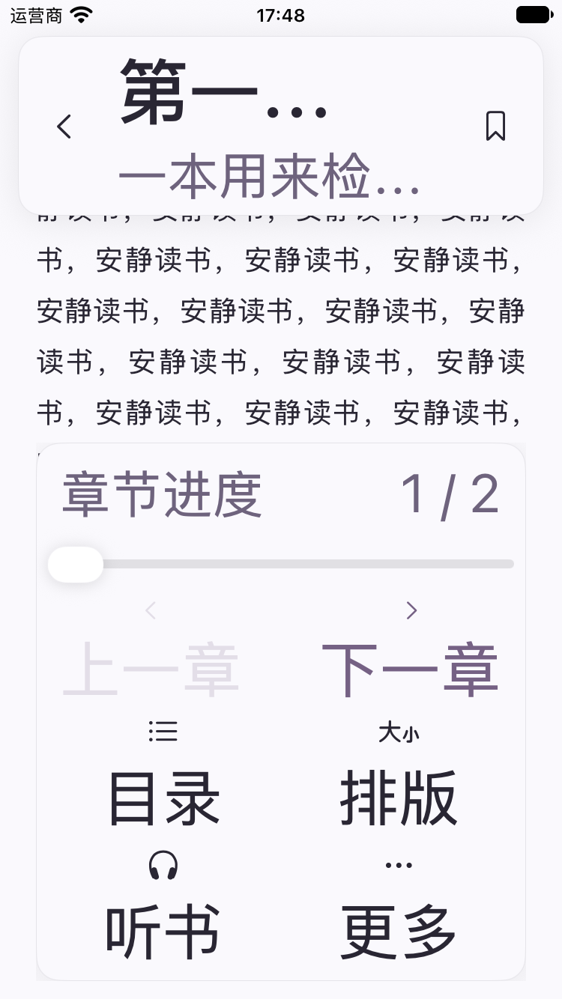

听页 · 功能键分层
1.18.0（106）｜保留专注版配色，重新组织阅读、听书与书架操作。
以下均为最终自动化测试中的 App 实际截图；测试书名、长句和记录来自 Debug 临时书库，不是用户内容。

阅读 · 目录 / 排版 / 听书 / 更多阅读定位和播放互不混用

边读边听 · 四键位置保持不变展开听书页与播放 / 暂停分开
听书 · 目录 / 语速 / 声音 / 定时播放、上一句、下一句为第一层

声音 · 系统输出设备切换设备立即生效；音色配置仍须保存
书架 · 筛选、排序与显示分离添加和整理保留明确文字

书架 · 同一组工具，不同显示方式排序只改变顺序，不混入隐藏书籍管理

夜间 · 同样的功能层级
迷你播放器 · 展开与播放两种操作结束听书需进入完整播放器确认
375 × 667pt · 搜索聚焦收起页首，让结果留在键盘上方

小屏最大字号 · 两列工具与独立滚动返回保留在顶部，不压缩字体适配